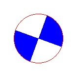
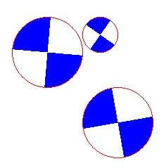
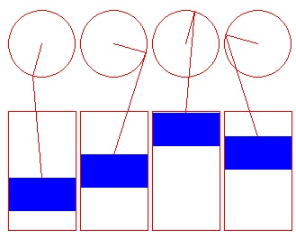
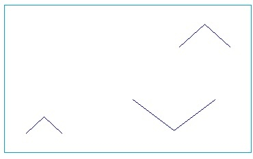

Elemente de programare orientata obiect - realizarea claselor
Teme program
Creati o clasa denumita "ochi" dupa care realizati doua obiecte prin instantierea clasei ochi
Creati o clasa denumita "ventil" dupa care realizati un obiect prin instantierea clasei ventil

Creati o clasa denumita "ventil" dupa care realizati mai multe obiecte prin instantierea clasei ventil

Creati o clasa denumita "piston" dupa care realizati patru obiecte prin instantierea clasei piston, de forma

Creati o clasa denumita "bird" care imita zborul unei pasari dupa care realizati trei obiecte prin instantierea clasei bird, de forma

Creati o clasa denumita "egg" dupa care realizati trei obiecte prin instantierea clasei egg, de forma
Creati o clasa denumita "snow" care imita un fulg de zapada. Creati un vector de obiecte snow dupa care realizati o aplicatie care imita ninsoarea